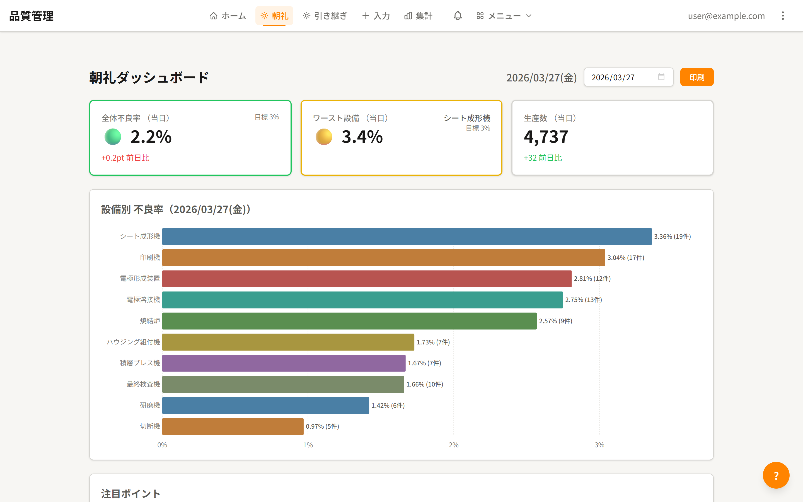
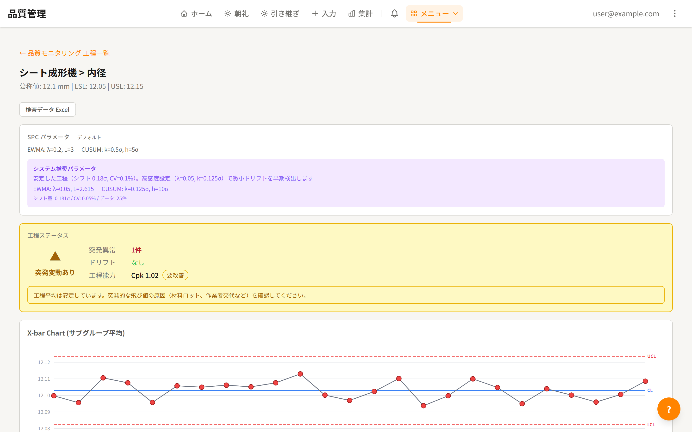
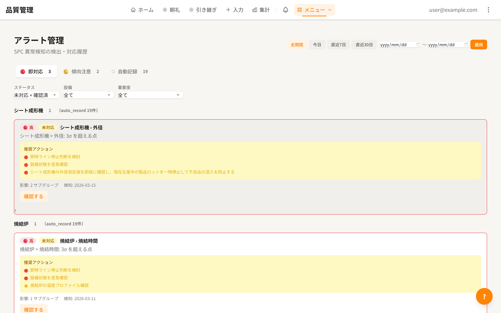
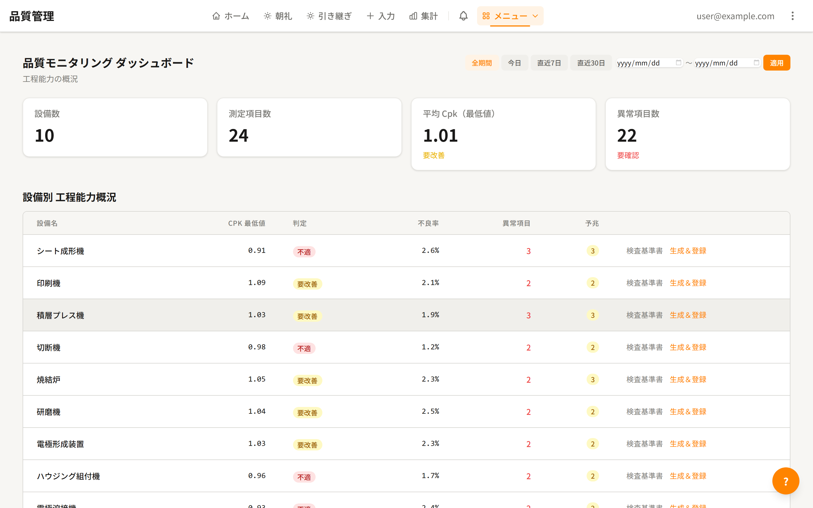
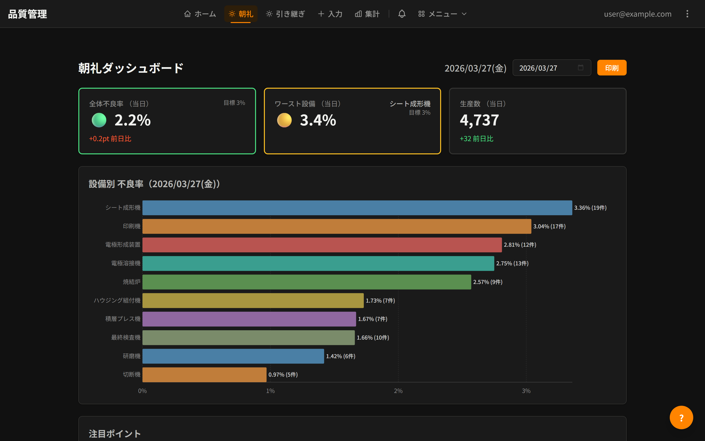

はじめに
私は製造現場で働いている。プログラミングの経験はない。
それでも、AIと一緒に品質管理システムを作った。IATF 16949（自動車産業の品質規格）の5大コアツールに対応した、72画面・48テーブルのWebアプリケーションだ。
かかった費用はAI利用料の約3万円。期間は約1.5ヶ月。
同じものをシステム開発会社に外注したら、数百万円はかかるだろう。なぜそれが3万円でできたのか。プログラミングの話ではなく、「現場の人間がAIとどう協働したか」の話をしたい。
なぜ作ろうと思ったか
きっかけは朝礼だった。
製造現場では毎朝、前日の品質データを確認して「今日は何に気をつけるか」を共有する。少なくとも、建前上はそうなっている。
実態はどうかというと、「特にありません」で終わる日が多かった。特にないわけがない。でも、何を見ていいかわからないのだ。
私の職場では、いつも異常ばかりだった。だから逆に、何が正常なのかが見えていなかった。グラフを開いても常に外れ値が並んでいる。その中で「今日のこれは本当に問題です」と言えるのか？ 昨日も一昨日もギザギザだったのに、なぜ今日だけ騒ぐのか？ 誰もその線引きができなかった。
データを見てどう動いていいかわからないメンバーたち。そのデータを見せて説明しているリーダーたちも、実はどうしていいかわからない。上位の生産技術に相談しても、クリティカルな答えが返ってこない。みんながみんな、どうしていいかわからない。その状況に、正直苛立っていた。
品質データ自体は存在していたのだ。でもそれは「活かされていなかった」のではなく、「活かせなかった」のだと思う。データはあるのに、それを意思決定に変える道具がなかった。
「DX」という言葉の先走り
最近は社内にもデジタル化の波が来ていて、設備の測定値がサーバーに上がるようになった。画面上でリアルタイムにデータが見える。
それを見て「DXが進んでいる」と言う人がいる。
気持ちはわかる。紙やExcelしかなかった時代に比べれば、デジタルでいつもと違う見え方がすれば「おお」とはなる。でも正直に言うと、やっていることはデータベースから数字を引っ張ってきて画面に並べているだけだ。10年前からあっても良かったようなシステムが、今やっと入った。
しかも、その見せ方に問題がある。
たとえば、サイクルタイム15秒の設備があったとする。その生データを横軸1日分でグラフにするとどうなるか。ただのギザギザだ。上に飛んだり下に飛んだり、そこから何かを読み取れという方が無理がある。
移動平均で見せてくれればトレンドはわかる。でもそういう処理はされていない。生データがそのまま画面に出ているだけだから、結局みんな異常値に飛びつく。外れ値を見つけて「これ何？」と騒ぐ。木を見て森を見ず、の状態が続いている。
経済産業省の定義によれば、DXとは「データとデジタル技術を活用して、業務そのものや組織、プロセスを変革すること」だ[1]。キーワードは変革。データを集めることでも、画面に表示することでもない。
うちの現場で起きているのは、その手前で止まっている状態だ。デジタル・トランスフォーメーションの「トランスフォーメーション」が抜け落ちている。データをデジタルにしただけでは、業務は何も変わらない。データを使って意思決定の仕方を変える——そこまで届いていない現場は、うちだけではないと思う。
「自分で作れたら」という衝動
じゃあベンダーにシステムを頼めばいいじゃないか、という話になるが、ここに二つの壁がある。
一つ目は、コストだ。
今回作ったような品質管理システム——IATF 5大コアツール対応、異常検知、AI分析、72画面——をシステム開発会社に発注したらいくらかかるか。数百万円では済まない。機能次第では数千万円の話になる。
製造部としては、それだけの予算を品質管理の「見える化」に出せるかというと、現実的には厳しい。投資対効果を説明するのも難しい。結果、現場としては諦めるしかない。
かといって、安く済ませようとすると別の問題が起きる。コストを削った分だけ仕様が削られ、現場が本当に欲しかったものとは違う、意味のわからないソフトが出来上がる。「一応入れました」というだけで、誰も使わないシステム。製造業に限らず、心当たりのある人は多いのではないだろうか。
二つ目は、仕様を伝えること自体の難しさだ。
製造現場には暗黙知が多い。「この機構だとなぜか工程設計通りに特性が出ない」「この設備は夏場に傾向が変わる」「この不良は前工程の段取り替え直後に出やすい」——こうした感覚は、現場で何年も働いて初めて身につくものだ。しかも数値化されていないから、本当にそうなのか勘違いなのかもわからない。だからこそシステムで可視化する意味があるのだが、その「言語化できない知識」をベンダーに伝えること自体が難しい。
予算があったとしても、この壁は残る。
高いお金を払っても現場の言葉が伝わらない。安く作れば使えないものが出来上がる。どっちに転んでも、現場が本当に欲しいシステムにはたどり着けない。
「自分で作れたらどんなに楽か」——そう思ったことがある人は、きっと私だけではないはずだ。ただし、プログラミングはできない。
AIは「万能の魔法使い」ではなかった
使ったのはClaude Code（クロードコード）というAIツールだ。チャットで「こういうものが欲しい」と伝えると、AIがコードを書いてくれる。
最初は魔法のように感じた。「ホームページを作って」と一言伝えただけで、それらしいページが出来上がった。え、こんな簡単に？と驚いた。
だが、その感覚はすぐに変わることになる。
AIは全能ではなかった。一回の指示で完璧なシステムが出来上がる、なんてことはない。「ダッシュボードを作って」と言ったら、確かにダッシュボードは出てきた。でも使われているグラフが見当違いだったりする。「ここでこのグラフ使うの？ 本当に？」と首をかしげるようなものが出てくる。
知識はある。技術もある。頼めばなんでもやってくれる。ただし、こちらの指示次第で良くも悪くも動いてしまう。私の言い方が曖昧なら、出てくるものも曖昧になる。私が「何が欲しいか」を明確に伝えられなければ、どんなに優秀な部下でもトンチンカンなものを作ってくる。
逆に、こちらが知らないことを可視化してくれるときは本当にすごかった。「こういうデータの見方があるんだ」「こんな分析ができるのか」と、教えられることもたくさんあった。
つまり、AIとの協働は「指示する側の知識」がそのまま成果物の質に反映される。プログラミングの知識ではない。業務の知識、ドメインの知識だ。
PDCAを127回、回した
一度のやりとりで完成しないとわかった私は、自分が一番よく知っているやり方を持ち込んだ。
PDCAだ。
製造業の基本中の基本。品質を語る人間なら誰でも知っている。これをシステム開発にそのまま適用した。
- Plan: こういう機能が欲しい、と要件を伝える
- Do: AIが実装する
- Check: 動かしてみて、「ここが違う」「こっちの方がいい」とフィードバックする
- Act: 振り返って、次に活かす
そもそも私はプログラムの開発というものをよくわかっていない。だからこそ、一度に大きなことをやろうとしなかった。小さく実装して、テストして、動くものを確認する。それだけを繰り返した。
最初の頃は「全部まとめて一気にやって」と思っていた。でもそれをやると、何がどこで変わったのかが追えなくなる。PDCAのドキュメントも複雑になって、振り返りが成り立たなくなる。製造現場で変化点管理をやる理由と同じだ。変更を同時に入れすぎると、問題が出たときに原因を特定できなくなる。
だから愚直に、一つずつ。朝礼の画面を作る。異常を検知するロジックを入れる。管理図を表示する。一つ確認して、納得してから次に進む。
これを127回繰り返した。
127回という数字が異常に聞こえるかもしれない。でも特別な方法論があったわけではない。ゴールに対しての執念があっただけだ。「現場のデータを意思決定に変えるシステムが欲しい」——その一点に向かって、小さなサイクルを積み上げ続けた。
ベンダーへの外注との一番の違いは、フィードバックの速さだ。「ここ違います」と言ったら、数分で直る。数週間待って修正版が届くのとは全く違う体験だった。
「これ無理かも」と「AIのせい」
順調だったわけではない。
技術スタックの話が出てきたときは正直きつかった。フレームワークがどう、データベースがどう、型安全性がどう——何を言っているのかわからない。無理じゃないはずなのに、期待通りに動かない。自分の思いをストレートに伝えているのに、出てくるものが違う。
最初はAIのせいにしていた。「もっとできるはずでしょう？」「なんでこうならないの？」と。
でもPhaseを重ねていくうちに、あることに気づいた。
自分の頭の中にあるイメージをそのまま言葉にしても、それは相手に伝わる形になっていない。これは考えてみればベンダーに仕様を伝えるときと同じ問題だ。ベンダーに「思ったものと違う」と不満を感じていたあの状況、実はこちらの伝え方にも原因があったのかもしれない。
AIとの対話で、それを思い知らされた。
この気づきがブレイクスルーだった。「AIが理解してくれない」ではなく「自分が伝え切れていない」と考え方を変えた途端、開発の速度が上がった。伝え方を工夫するようになったからだ。
技術用語がわからないことは最後まで変わらなかった。でも、「わからない」と正直に言えば、AIは噛み砕いて説明してくれる。「つまりこういうことがしたい」と自分の言葉で伝え直せば、AIがそれを技術に翻訳してくれる。完全に理解する必要はなかった。
あの問題が、どう変わったか
「特にありません」で終わっていた朝礼。画面を開くだけで、今日どの設備に注目すべきかが信号機の赤・黄・緑で一目でわかるようになった。注目ポイントも自動で出る。もう「何を話すか」を考える必要がない。

ギザギザにしか見えなかった生データ。管理図を通せば、管理限界線とトレンドが見える。外れ値に飛びつくのではなく、「いつもと違うのかどうか」を統計的に判定できるようになった。

その判定結果を、本当に対応すべきものだけ3段階で通知する。「今日のこれは騒ぐべきか？」の答えを、システムが出してくれる。

数千万円かかると諦めていたIATF対応。工程フロー図、PFMEA、コントロールプラン、MSA、PPAP——5大コアツールが全部入った。監査に必要な書類もシステムから出力できる。
「どうしていいかわからない」状態。異常が出たら「次に何をすべきか」をAIが過去の対応実績から提案してくれるようにした。人間は提案を見て判断するだけでいい。

全部で72画面、1,168件のテスト、48のデータベーステーブル。個人で作ったにしては、それなりの規模になった。ダークモードにも対応している。

データを見せるのではなく、データが語ることを伝える。あの朝礼の景色を変えたくて、ここまで来た。
この経験で変わったこと
開発者の仕事を、ようやく理解した
正直に言うと、以前は「こっちが仕様を出せば、あとは作ってくれるんでしょう」くらいに思っていた。ベンダーに対しても、社内の開発者に対しても。
自分でシステムを作ってみて、その認識が間違っていたことがわかった。曖昧な仕様から意図を汲み取って、矛盾を解決して、動くものに仕立てる。それがどれだけ大変なことか、127回のPDCAを通じて身をもって知った。
AIが相手だからこそ気づけたのかもしれない。AIは忖度しない。伝え方が悪ければ、悪いなりのものがそのまま出てくる。人間の開発者は、足りない部分を経験や想像力で補ってくれていたのだ。そのありがたさに、今さらながら気づかされた。
「伝える力」が一番の収穫だった
このプロジェクトで一番成長したのは、技術力ではない。伝える力だ。
自分の頭の中にある「こうしたい」を、相手が動ける形に翻訳する力。それは対AIでも、対ベンダーでも、対社内でも同じだ。
「うーん、なんか違うんだよな」と言えば、AIは「こういうことですか？」と別の案を出してくる。それを見て「あ、そうそう、こっちの方がいい」と方向が定まる。この繰り返しの中で、自分の要求を言語化する精度が上がっていった。
製造現場の暗黙知が、この対話を通じてシステムに反映されていく。ベンダーに仕様書を投げるのとは全く違う体験だった。
PDCAは借り物ではなく、自分の土台だった
振り返ってみると、特別なことは何もしていない。製造業の基本であるPDCAを、愚直に回しただけだ。
ただ、ひとつ言えることがある。PDCAが「知っている知識」ではなく「身についている習慣」だったから、未知の領域でも迷わなかった。システム開発のことは何もわからない。でも「小さく試して、確認して、直す」というやり方だけは体に染みついている。
その土台があったから、プログラミング未経験でも127回のサイクルを回し切れたのだと思う。
おわりに
プログラミングができなくても、ドメイン知識があればシステムは作れる——そんな時代がもう来ている。
「AIが仕事を奪う」という話はよく聞く。でも私が経験したのは逆だった。AIがコードを書くことで、現場の知識を持つ人間の価値がむしろ上がった。ベンダーに伝えきれなかった暗黙知を、自分の手でシステムにできる。
必要なのはプログラミングの知識ではない。「自分の業務で、何が本当に必要か」を知っていること。そして「わからないことはわからない」と正直に言えること。それだけだ。
もちろん、この品質管理システムはまだシミュレーションデータで動いているポートフォリオだ。実運用には至っていない。でも「現場の人間がここまで作れる」という事実自体に、意味があると思っている。
同じような立場で「自分には無理だ」と思っている人がいたら、伝えたい。
PDCAを回せる人なら、システムも作れる。
[1] 経済産業省「デジタルガバナンス・コード3.0 ～DX経営による企業価値向上に向けて～」（2024年9月改訂）